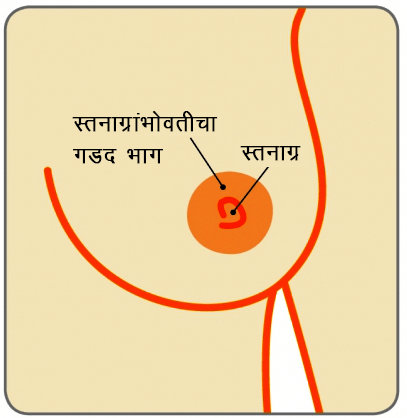

स्तन

स्तनांच्या आरोग्याच्या सौम्य समस्याा
स्तनाग्रांशी संबंधित समस्या
पायल (नाव बदलले आहे), या 45 वर्षांच्या महिलेला गेल्या 6 महिन्यांपासून डाव्या स्तनाग्रामधून वारंवार स्राव होत आहे तसेच या स्तनाग्राच्या भोवती संसर्गदेखील झालेला आहे.
स्तन
स्तनाग्र

डक्ट प्रसारण म्हणजे काय?
स्तन हे लोब्युलपासून (दूधनिर्माण करणार्या ग्रंथी) आणि डक्ट (स्तनाग्रापर्यंत दूध वाहून नेणारी नलिका) यांपासून तयार झालेले असतात, ज्याभोवती चरबीच्या आणि आधार देणार्या पेशी असतात. स्त्रियांचा मेनापॉज सुरू होतो तसा स्तन वृद्ध होऊ लागतात तसे स्तनाग्रांमागील या नलिका लहान आणि रुंद होतात. याला डक्ट प्रसारण पावणे असे म्हणतात.
स्तनांमधील हा सामान्य बदल आहे आणि त्याबद्दल चिंता करण्याचे काही कारण नाही. कधीकधी या रुंद झालेल्या नलिकांमध्ये स्राव जमा होतो आणि त्याच्या कडांना त्रास होऊ शकतो. या कडांना अल्सर होऊन तिथे वेदना होण्याचीही शक्यता असते, मात्र, हे फार सामान्य नसते. .
डक्ट प्रसारणाचे निदान कसे होते?
यासाठी तज्ज्ञाचा सल्ला घेणे आवश्यक असते आणि तीन निरनिराळ्या चाचण्या करणे आवश्यक असते, त्यांना बर्याचदा तिहेरी चाचणी असे म्हणतात, जेणेकरून नक्की निदान करणे शक्य असते. त्यामध्येे तज्ज्ञाद्वारे स्तनांची चिकित्सा तपासणी, मॅमोग्राम (स्तनांचा एक्स रे) आणि स्तनांचा अल्ट्रासाउंड (ज्यामध्ये उच्च वारंवारितेच्या ध्वनीलहरींच्या वापर करून स्तनांचे चित्र निर्माण केले जाते) यांचा समावेश होतो
स्तनाग्रांमधून स्राव होत असेल तर त्याची सुद्धा चाचणी केली जाऊ शकते, विशेषतः त्यामध्ये रक्त येत असेल तर, जेणेकरून निदानाची खात्री व्हायला मदत होते
डक्ट प्रसारणाचे व्यवस्थापन कसे केले जाते?
बहुतांश प्रकरणांमध्ये हा वय वाढण्याचा सामान्य भाग असेल तर उपचारांची गरज नसते, ते आपल्या आपण बरे होते. मात्र, नवी काही लक्षणे आढळली तर मात्र तत्ज्ञाची भेट घेणे आवश्यक असते. मात्र, स्तनाग्रांमधून त्रासदायक स्राव होत राहिला तर एखादीला संसर्ग झालेली एक किंवा अनेक नलिका काढून टाकण्यासाठी शस्त्रक्रिया करावी लागू शकते. ही शस्त्रक्रिया सामान्यपणे साधारण भूल देऊन केली जाते आणि रुग्णाला दिवसभर किंवा रात्रभर हॉस्पिटलमध्ये राहायला लागू शकते.
पेरिडक्टल मस्टिटाइस स्तनदाह म्हणजे काय?
पेरिडक्टल मस्टिटाइस ही स्तनांची सौम्य (कॅन्सर नव्हे) स्तिथी असते. कधीकधी स्तनाग्रांखालील नलिकांमध्ये दाह होतो आणि संसर्ग होतो. याला पेरिडक्टल मस्टिटाइस असे म्हणतात. हे सर्व वयोगटातील लोकांना होऊ शकते पण तरुण स्त्रियांमध्ये हा आजार अधिक सामान्यपणे आढळतो. हा स्त्रियांमध्ये सर्वात जास्त आढळत असला तरी पुरुषांनाही पेरिडक्टल मस्टिटाइस होऊ शकतो. पण तो फार दुर्मीळ असतो
पेरिडक्टल मस्टिटाइसमुळे स्तन हुळहुळे होतात आणि स्पर्श केल्यास गरम असतात आणि तेथील त्वचा लालसर झाल्यासारखी दिसू शकते. यामुळे स्तनाग्रांमधून स्रावही होऊ शकतो, त्यामध्ये रक्त असू शकते किंवा नसू शकते.
कधीकधी स्तनाग्राच्या मागे गुठळी जाणवू शकते किंवा स्तनाग्रांमागील स्तनांच्या पेशी घट्ट होऊ शकतात. यामुळे स्तनाग्र आतील बाजूला ओढले जाऊ शकते त्यामुळे ते उलटे दिसू शकते. कधीकधी गळू (यामध्ये पू असतो) किंवा भगेंद्र (नलिका आणि त्वचेदरम्यान काही भाग) विकसित होऊ शकते. धूम्रपान करणार्या लोकांना पेरिडक्टल मस्टिटाइस होण्याचा धोका जास्त असतो, कारण सिगारेटमधील काही पदार्थ स्तनाग्रांमादील नलिकांची हानी करू शकतात. धूम्रपानामुळे उपचारानंतर बरे होण्याचा वेगही मंदावू शकतो.-

पेरिडक्टल मस्टिटाइसचे निदान कसे केले जाते?
स्तनांची चिकित्सा तपासमी आणि स्तनांचे अल्ट्रासाउंड करणे आवश्यक असते. स्तन अतिशय नाजूक झालेले असल्यामुळे मॅमोग्राम करणे त्रासदायक असू शकते आणि संसर्ग पूर्ण बरा होईपर्यंत ते केले जात नाही. स्तनाग्रांमधून स्राव होत असेल तर, त्याचा नमुना मायक्रोस्कोपखाली तपासून पाहण्यासाठी प्रयोगशाळेत पाठवला जातो, जेणेकरून निदानाची खात्री होईल (स्रावामध्ये रक्त येत असले तर या पर्यायाची शक्यता जास्त असते).
पेरिडक्टल मस्टिटाइससाठी काय उपचार असतात?
बहुतांश वेळा, अँटीबायॉटिक्समुळे संसर्ग बरा होऊ शकतो. वेदनांपासून आराम मिळण्यासाठी, पॅरासिटॅमॉल देता येते. जर गळू (पूसकट) झाले असेल तर अल्ट्रासाउंडचा वापर करून पू काढून टाकणे (अस्पायरेशन) याला प्रथम पसंती दिली जाते. सगळा पू काढला जात नाही तोपर्यंत हा उपचार पुन्हा पुन्हा करावा लागू शकतो (काही कालावधीसाठी). जर पुन्हा पुन्हा करूनही उपयोग होत नसेल तर, त्वचेवर लहानसा छेद दिला जातो, जेणेकरून लहानशी साधारण भूल देऊन पू बाहेर काढता येतो.
पेरिडक्टल मस्टिटाइस पुन्हा झाला (पुनरुज्जीवन), तर एक किंवा अधिक दूषित नलिका काढून टाकण्यासाठी शस्त्रक्रिया करावी लागू शकते. वारंवार होणारे पेरिडक्टल मस्टिटाइस कायमचे थांबवण्यासाठी, संसर्ग झालेली एक किंवा अधिक नलिका काढून टाकणे (याला मायक्रोडोकेक्टॉमी असे म्हणतात) किंवा सर्व प्रमुख नलिका काढून टाकणे (याला टोटल डक्ट एक्सिजन असे म्हणतात) असा उपचार केला जाऊ शकतो. ही शस्त्रक्रिया साधारण भूल देऊन केली जाते.